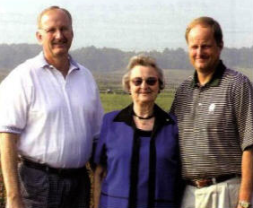

Dear Customers,
We at R.A. Dudley Nurseries, Inc. want to thank you for your continued patronage. Since the 1940's, when the Dudley family entered into the nursery business, our biggest concern and our greatest satisfaction has come from satisfying the needs of our customers. With our many years in this business we have established quite a tradition and we believe that tradition plus experience equals quality and value.
Quality runs deep in the way we do business. It runs deep in the way we work to give you what you want, when you want it and how you want it. When you add the tradition of the Dudley family along each and every experienced employee at the nursery, you get quality plants that will increase the value of your customers' buying experience. We at R.A. Dudley Nurseries, Inc. hope that you will continue to enjoy the tradition, experience, quality and value in the years to come.
We hope that if you are ever in the area you will stop by and let us show you the nursery. Thanks again for your patronage and best wishes to you in the future.

Sincerely,
Tommy and Mike Dudley